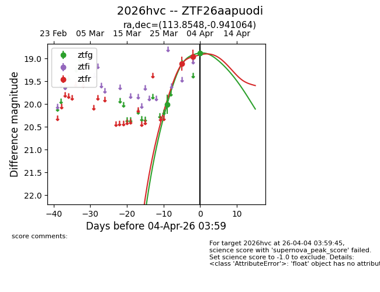
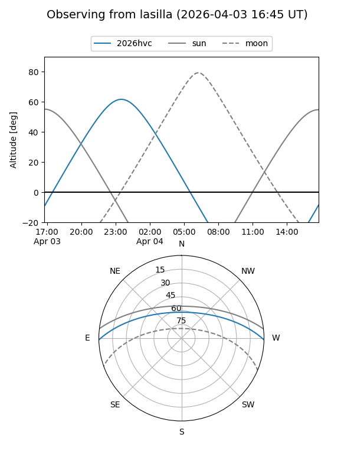
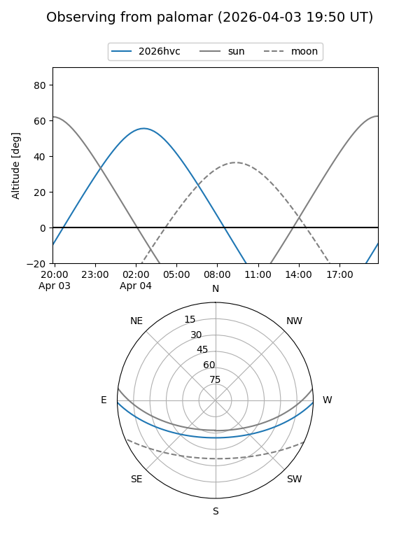
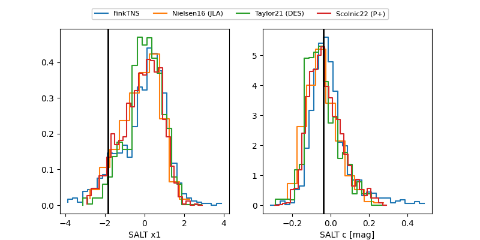

2026hvc
Target 2026hvc at 2026-04-04 04:02
Aliases and brokers:
FINK: link
Lasair: link
ALeRCE: link
TNS: link
YSE: link
alt names
ZTF26aapuodi (ztf,fink_ztf)
2026hvc (tns,yse)
Coordinates:
equatorial (ra, dec) = 113.8548,-0.94106
equatorial (HMS+DMS) = 07:35:25.15,-00:56:27.83
galactic (l, b) = (218.8403,+9.33659)
Flags:
Photometry:
last ztfg=18.88, ztfr=18.96
2 ztfg, 2 ztfr detections
Lightcurve

Visibility


Additional plots
